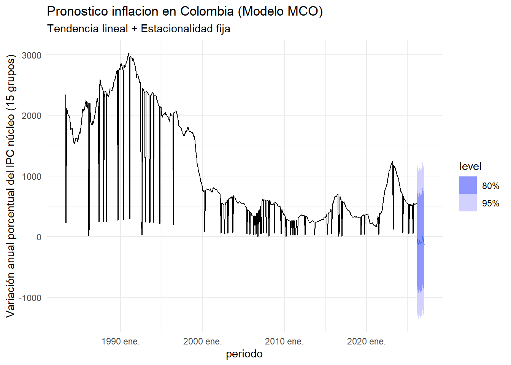

ESta base de datos es del banco de la republica. Nos muestra diferentes indicadores importantes en relacion con la inflacion.
Periodo: fecha de cada observacion
inflacion_sin_alimentos: es una medida de inflación que calcula cómo están cambiando los precios en la economía excluyendo los alimentos, ya que estos pueden ser muy volátiles debido a factores climáticos, estacionales o de oferta y demanda.
inflacion_ni_regulados: es una medida de inflación que calcula cómo están cambiando los precios en la economía excluyendo tanto los alimentos como los servicios regulados, ya que ambos pueden ser muy volátiles debido a factores externos o intervenciones gubernamentales.
inflacion_nucleo15: es una medida de inflación subyacente (inflación núcleo) que calcula cómo están cambiando los precios en la economía excluyendo los componentes más volátiles, usando una canasta de 15 grupos del IPC.
Es una tasa de variación anual (%)
Para qué sirve: Ver la tendencia real de la inflación Tomar decisiones de política monetaria Hacer modelos econométricos (ARIMA, ETS, etc.) Evitar distorsiones de choques temporales
Importacion de las librerias
# Se importan las librerias de R para el analisis de las series de tiempolibrary(tidyverse)
Warning: package 'tidyverse' was built under R version 4.5.3
Warning: package 'readr' was built under R version 4.5.3
Warning: package 'forcats' was built under R version 4.5.3
── Attaching core tidyverse packages ──────────────────────── tidyverse 2.0.0 ──
✔ dplyr 1.2.0 ✔ readr 2.2.0
✔ forcats 1.0.1 ✔ stringr 1.6.0
✔ ggplot2 4.0.2 ✔ tibble 3.3.1
✔ lubridate 1.9.5 ✔ tidyr 1.3.2
✔ purrr 1.2.1
── Conflicts ────────────────────────────────────────── tidyverse_conflicts() ──
✖ dplyr::filter() masks stats::filter()
✖ dplyr::lag() masks stats::lag()
ℹ Use the conflicted package (<http://conflicted.r-lib.org/>) to force all conflicts to become errors
library(tsibble)
Warning: package 'tsibble' was built under R version 4.5.3
Adjuntando el paquete: 'tsibble'
The following object is masked from 'package:lubridate':
interval
The following objects are masked from 'package:base':
intersect, setdiff, union
library(feasts)
Warning: package 'feasts' was built under R version 4.5.3
Cargando paquete requerido: fabletools
Warning: package 'fabletools' was built under R version 4.5.3
library(fable)
Warning: package 'fable' was built under R version 4.5.3
# Se importa la base de datos con la informacionlibrary(readr)Inflacion <-read_delim("~/Especialidad/TimeSeries/data/Inflacion.csv", delim =";", escape_double =FALSE, trim_ws =TRUE)
Rows: 516 Columns: 4
── Column specification ────────────────────────────────────────────────────────
Delimiter: ";"
chr (2): Inflación sin alimentos, Inflación sin alimentos ni regulados
num (1): Inflación núcleo 15
date (1): Periodo(MMM, AAAA)
ℹ Use `spec()` to retrieve the full column specification for this data.
ℹ Specify the column types or set `show_col_types = FALSE` to quiet this message.
# Numero de registroscat("Numero de observaciones serie desempleo : ", nrow(Inflacion))
Numero de observaciones serie desempleo : 516
cat("\nTemporalidad de la serie : ", range(year(Inflacion$periodo)))
Temporalidad de la serie : 1983 2026
cat("\nTemporalidad fechas de la serie :", range(Inflacion$periodo))
Temporalidad fechas de la serie : 4837 20512
El dataset tiene un numero de observaciones de 516.
La temporalidad de la serie va desde el año 1983 hasta el año 2026.
Temporalidad de la serie
# Este codigo convierte el dataframe en un objeto tipo tsibble y define la columna "periodo" como el índice temporal de la serie, con frecuencia mensual.Inflacion <- Inflacion |>mutate(periodo =yearmonth(periodo)) |>as_tsibble(index = periodo)
Primer Grafico
En este grafico nos muestra que la serie de inflacion_nucleo15 tiene una tendencia general descendente a lo largo del tiempo, con picos pronunciados en las décadas de 1980 y 1990, seguidos de una caída significativa en los años posteriores. Además, se observan oscilaciones estacionales regulares, con aumentos y disminuciones mensuales que parecen repetirse cada año. En resumen, la serie muestra una combinación de tendencia a largo plazo y estacionalidad mensual.
# Grafico de la serie# Tamaño de los graficosoptions(repr.plot.width =6, repr.plot.height =4)autoplot(Inflacion)
Warning: `autoplot.tbl_ts()` was deprecated in fabletools 0.6.0.
ℹ Please use `ggtime::autoplot.tbl_ts()` instead.
ℹ Graphics functions have been moved to the {ggtime} package. Please use
`library(ggtime)` instead.
Plot variable not specified, automatically selected `.vars =
inflacion_nucleo15`
STL = Seasonal and Trend decomposition using Loess
Utilizamos el metodo de STL ( Seasonal and Trend decomposition using Loess ) para descomponer la serie en sus componentes de:
Tendencia
Estacionalidad
Residuos
Esto nos permite analizar cada componente por separado y entender mejor la estructura de la serie de tiempo.
Analisis del grafico
El grafico nos muestra la descomposicion de la serie de inflacion_nucleo15 en sus componentes:
Tendencia : muestra una tendencia general descendente a lo largo del tiempo, con picos pronunciados en las décadas de 1980 y 1990, seguidos de una caída significativa en los años posteriores (algo que insinuaba el grafico original).
Estacionalidad : muestra oscilaciones estacionales regulares, con aumentos y disminuciones mensuales que parecen repetirse cada año. Esto indica que ciertos meses del año tienden a tener una inflación más alta o más baja de manera consistente.
Residuos : muestra las fluctuaciones aleatorias que no se explican por la tendencia o la estacionalidad. En este caso, los residuos parecen ser relativamente pequeños en comparación con la tendencia y la estacionalidad, lo que sugiere que el modelo de descomposición captura bien la estructura de la serie.
# Descomposicion STL de la serieInflacion |>model(STL(inflacion_nucleo15 ~trend() +season(window ="periodic")) ) |>components() |>autoplot()
Warning: `autoplot.dcmp_ts()` was deprecated in fabletools 0.6.0.
ℹ Please use `ggtime::autoplot.dcmp_ts()` instead.
ℹ Graphics functions have been moved to the {ggtime} package. Please use
`library(ggtime)` instead.
Modelo de Regresion (TSLM)
Ajuste del modelo
Ahora realizamos un modelo de regresion para pronosticar la inflacion en los siguientes 12 meses. El modelo que utilizamos es el TSLM ( Time Series Linear Model ), que es una regresion lineal que incluye términos de tendencia y estacionalidad para capturar la estructura de la serie de tiempo.
# Ajustar el modelo usando TSLM (Time Series Linear Model - MCO para series de tiempo)fit_mco <- Inflacion |>model(mco_lineal =TSLM(inflacion_nucleo15 ~trend() +season()) )
Pronostico
En este caso la grafica del pronostico del modelo MCO (lineal) para inflación en Colombia muestra la tendencia principal descendente de la serie, representada por la línea sólida negra. Las barras grises indican el componente estacional, que refleja los picos y valles mensuales que se repiten a lo largo del tiempo. La zona sombreada azul representa el intervalo de confianza del 80% para el pronóstico futuro, lo que significa que hay un 80% de probabilidad de que los valores futuros de la inflación caigan dentro de esa área. Hacia adelante (2020+), el modelo proyecta una continuación de la tendencia de caída con oscilaciones estacionales contenidas, donde el 80% de probabilidad queda dentro del área azul, indicando una expectativa de disminución gradual en la inflación con fluctuaciones estacionales moderadas.
Warning: `autoplot.fbl_ts()` was deprecated in fabletools 0.6.0.
ℹ Please use `ggtime::autoplot.fbl_ts()` instead.
ℹ Graphics functions have been moved to the {ggtime} package. Please use
`library(ggtime)` instead.

Reporte del modelo
En este reporte podemos ver que el modelo intenta explicar la inflación usando dos cosas:
Tendencia en el tiempo ( trend() ), es decir, si la serie sube o baja con el paso de los meses.
Estacionalidad mensual ( season() ), o sea, si ciertos meses suelen comportarse distintos a otros.
Nos indica que :
La tendencia es negativa -4.3030 y el p-value es < 2e-16, lo que significa que es altamente significativa. Esto confirma que la inflación ha estado disminuyendo a lo largo del tiempo (aproximadamente 4.3 unidades por periodo).
La mayoría de los términos de estacionalidad ( season(Year2) a season(Year12) ) tienen p-values altos (>0.05), lo que sugiere que no hay estacionalidad significativa en la serie. Esto indica que los patrones mensuales no son estadísticamente relevantes para explicar la variación de la inflación.
Esto tiene mucho sentido teniendo en cuenta que la inflacion nucleo 15 elimina factores que pueden llegar a ser volatiles.
El R cuadrado multiple 0.5304 nos indica que el modelo explica aproximadamente el 53% de la variabilidad de la inflación, lo cual es un ajuste moderado.
El R cuadrado ajustado 0.5192 nos indica que, después de penalizar por la cantidad de predictores, el modelo sigue explicando alrededor del 52% de la variabilidad, lo que confirma que los términos incluidos son relevantes.
El valor de F estadistico 47.35 con un p-value < 2.22r-16 indica que el modelo en su conjunto es altamente significativo, es decir, al menos uno de los predictores (en este caso, la tendencia) contribuye significativamente a explicar la variación de la inflación.
En este caso se utilizan 3 modelos para comparar el rendimiento de cada uno:
mco_stl : Modelo de regresion lineal con tendencia y estacionalidad ( TSLM con trend() + season() ).
mco_stl_covid : Modelo de regresion lineal con tendencia, estacionalidad y un indicador para el impacto del COVID-19 ( TSLM con trend() + season() + I(periodo == yearmonth(“2020-04”)) ).
mco_paro : Modelo de regresion lineal con tendencia, estacionalidad y un indicador para el impacto del paro nacional en Colombia ( TSLM con trend() + season()
fit_mco <- Inflacion |>model(# Modelo base: solo tendencia y estacionalidadmco_stl =TSLM(inflacion_nucleo15 ~trend() +season()),# Modelo con COVID: agrega un "golpe" en abril 2020mco_stl_covid =TSLM(inflacion_nucleo15 ~trend() +season() +I(periodo ==yearmonth("2020-04"))),# Modelo con Paro Nacional: agrega un "golpe" entre abril y junio 2021mco_paro =TSLM(inflacion_nucleo15 ~trend() +season() +I(periodo >=yearmonth("2021-04") & periodo <=yearmonth("2021-06"))),# Modelo solo tendencia: ignora la estacionalidadmco_trend =TSLM(inflacion_nucleo15 ~trend()) )
Analisis comparativo de la precisión de los modelos
Teniendo en cuenta los resultados nos beneficiara escoger el modelo con los valores mas bajos teniendo en cuenta que:
AIC : mide qué tan bien ajusta el modelo, penalizando la complejidad. Más bajo es mejor .
BIC : similar al AIC, pero penaliza más la complejidad. Más bajo es mejor .
AICc : es una versión corregida del AIC, útil sobre todo en muestras
Teniendo en cuenta los resultados el modelo mco_trend es el que tiene los valores mas bajos en AIC, BIC y AICc, lo que sugiere que es el modelo más preciso entre los comparados. Esto indica que la tendencia por sí sola explica gran parte de la variabilidad de la inflación núcleo 15%, y que agregar términos de estacionalidad o indicadores para eventos específicos (COVID-19, paro nacional) no mejora significativamente el ajuste del modelo.
# Comparamos la precisión (Criterios de información)glance(fit_mco) |>select(.model, AIC, BIC, AICc) |>arrange(AIC)
Por otro lado al analizar el rendimiento del pronostico nos beneficiara escoger el modelo con los valores mas bajos. En los analisis anteriores mco_trend tenia las mejores metricas de AIC, BIC y AICc, pero ahora al analizar las metricas de rendimiento del pronostico mco_paro es el que tiene los valores mas bajos en MAE, RMSE, MAPE y MASE, lo que sugiere que es el modelo con mejor capacidad de pronóstico entre los comparados. Esto indica que incluir tanto la tendencia como la estacionalidad y considerar los efectos del paro en el modelo mejora significativamente la precisión de las predicciones futuras de la inflación núcleo 15%, en comparación con otros modelos.
# Medicion del redimiento del pronosticoaccuracy(fit_mco) |>select(.model, MAE, RMSE, MAPE, MASE)
# Validación train (80%) - test pronóstico (20%)index_cut <-floor(nrow(Inflacion) *0.8)index_train <-seq(1, index_cut)index_test <-seq(index_cut +1, nrow(Inflacion))# Sets de entrenamiento y pruebaInflacion_train <- Inflacion[index_train, ]Inflacion_test <- Inflacion[index_test, ]# Entrenar los cuatro modelos con el set de entrenamientofit_comp_train <- Inflacion_train |>model(# Modelo base: solo tendencia y estacionalidadmco_stl =TSLM(inflacion_nucleo15 ~trend() +season()),# Modelo con COVID: agrega un "golpe" en abril 2020mco_stl_covid =TSLM(inflacion_nucleo15 ~trend() +season() +I(periodo ==yearmonth("2020-04"))),# Modelo con Paro Nacional: agrega un "golpe" entre abril y junio 2021mco_paro =TSLM(inflacion_nucleo15 ~trend() +season() +I(periodo >=yearmonth("2021-04") & periodo <=yearmonth("2021-06"))),# Modelo solo tendencia: ignora la estacionalidadmco_trend =TSLM(inflacion_nucleo15 ~trend()) )# Pronóstico sobre el horizonte del set testh_pronostico <-length(index_test)predict_comp <-forecast(fit_comp_train, h = h_pronostico)
Warning: There were 2 warnings in `mutate()`.
The first warning was:
ℹ In argument: `mco_stl_covid = (function (object, ...) ...`.
Caused by warning:
! prediction from a rank-deficient fit may be misleading
ℹ Run `dplyr::last_dplyr_warnings()` to see the 1 remaining warning.
# Comparar rendimiento en el set test# El modelo con menor RMSE es el que mejor prediceaccuracy(predict_comp, Inflacion_test) |>select(.model, MAE, RMSE, MAPE, MASE) |>arrange(RMSE)
# A tibble: 4 × 5
.model MAE RMSE MAPE MASE
<chr> <dbl> <dbl> <dbl> <dbl>
1 mco_trend 891. 985. 228. NaN
2 mco_paro 891. 987. 230. NaN
3 mco_stl 891. 987. 230. NaN
4 mco_stl_covid 891. 987. 230. NaN
Posteriormente al separar la serie en un set de entrenamiento (80%) y un set de prueba (20%), entrenamos los mismos modelos en el set de entrenamiento y luego realizamos pronósticos para el horizonte del set de prueba. Al comparar las métricas de rendimiento (MAE, RMSE, MAPE, MASE) en el set de prueba, podemos identificar cuál modelo tiene la mejor capacidad predictiva. En este caso, el modelo mco_trend tiene valores menores en comparacion con los otros modelos.
Esto se explica porque separando los datos el modelo solo aprende del pasado y en muchas ocasiones no toma en cuenta eventos futuros que pueden llegar a afectar la serie, como el paro nacional en este caso.
Por lo que si los eventos dummy no son incluidos en el modelo, este no aprende de ellos y por lo tanto no puede predecirlos.
Grafico Pronostico train - test
El grafico nos muestra que todos los modelos presentan diferencias significativas con respecto a los valores reales del set de prueba (línea negra), lo que indica que ninguno de los modelos logra capturar completamente la dinámica de la inflación núcleo 15% en el período de prueba.
# Gráfico pronóstico train - testpredict_comp |>autoplot(Inflacion, level =NULL) +# ← Inflacion completa, no solo trainautolayer(Inflacion_test, inflacion_nucleo15, colour ="black", linewidth =0.8) +# ← valores reales del testlabs(title ="Pronóstico de Inflación en Colombia (Modelo MCO)",subtitle ="Comparación distintos modelos | Línea negra = valores reales",y ="Variación anual porcentual del IPC núcleo (15 grupos)",x ="Período") +theme_minimal()
Warning: `autolayer.tbl_ts()` was deprecated in fabletools 0.6.0.
ℹ Please use `ggtime::autolayer.tbl_ts()` instead.
ℹ Graphics functions have been moved to the {ggtime} package. Please use
`library(ggtime)` instead.
Diagnóstico de residuos
Los graficos nos muestran que el comportamiento de los residuos es similar en los cuatro modelos, con patrones de autocorrelación y distribución no normal. Sin embargo, el modelo mco_trend muestra residuos ligeramente más cercanos a ruido aleatorio, con menos patrones obvios. Esto sugiere que mco_trend tiene un mejor ajuste en terminos de residuos.
# Residuos de cada modelo por separadofor (modelo inc("mco_stl", "mco_stl_covid", "mco_paro", "mco_trend")) { p <- fit_comp_train |>select(all_of(modelo)) |>gg_tsresiduals() +labs(title =paste("Residuos -", modelo))print(p)}
Warning: `gg_tsresiduals()` was deprecated in feasts 0.4.2.
ℹ Please use `ggtime::gg_tsresiduals()` instead.
ℹ Graphics functions have been moved to the {ggtime} package. Please use
`library(ggtime)` instead.